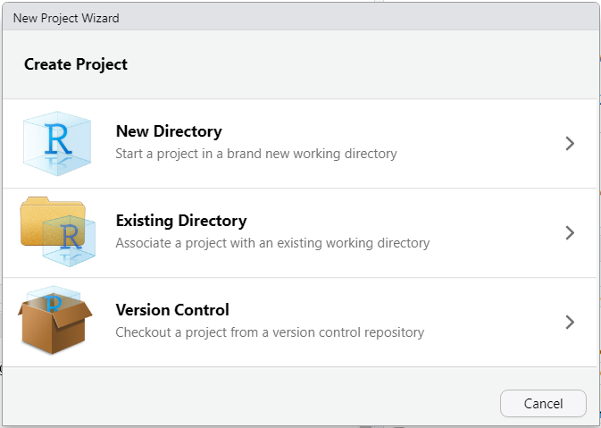
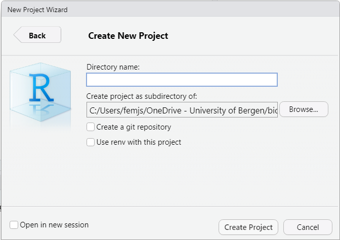

3 RStudio projects
In this chapter, you will
- learn why you should use RStudio projects for your analyses
- set up an RStudio project
- learn how to organise your files within an RStudio project
RStudio allows you to divide your work into projects which are independent from each other. A project has its own working directory in which you can create specific scripts, load data sets, add external files, activate packages, etc. For each project, you will thus be guaranteed to work in a dedicated workspace.
Working with projects is a great way to keep things organised. You do not risk to mix up files or variables with relatively similar names when writing your code, especially if you are not so creative when it comes to naming objects. You will also find it easy to share your work with others since everything they need (and nothing less or more) is in a project, and they work well with git.
For example, if you plan to work with assignments in different courses in addition to the data analyses for your master’s thesis, we strongly recommend to set up a RStudio project for each course, and another for your thesis.
To create a project, go to the main menu and select
as shown in Figure 3.1:
Click again on New Directory > New Project, choose a project name and a destination on your disk, eand click the button “Create Project” as shown in Figure 3.2:

Feel free to import in the project folder all the files that you will need later on, such as original data sets, etc.
Exercise
Create a project for BIO300B. Call it BIO300B and save it to a convenient location.
3.1 Opening a project
Once you have made a project, you need to make sure that you are using it when you start RStudio. You can check this by looking in the top right corner of RStudio: it will say “Project: (None)” if you are not in a project, and will show your project name if it is correct. There are several ways to open an RStudio project
- by clicking on the file in your file manager
- click on the list o recently opened projects in the top right corner of RStudio and selecting your project
- from the menu
3.2 Organising files in a project
Imagine how hard it would be to find what you wanted to wear if you kept all your clothes in a heap on the floor. It’s the same when you keep all your files in one directory (norsk: mappe), which might look something like this.
.
├── analyse.R
├── final-lake-tilo-chemistry.csv
├── final2_lake-tilo-diatoms.csv
├── final_lake-tilo-diatoms.csv
├── import.R
├── manuscript.pdf
├── manuscript.qmd
├── my_project.Rproj
└── references.bibMuch better to use sub-directories to organise the files.
.
├── R
│ ├── 01_import.R
│ └── 02_analyse.R
├── data
│ ├── 2022-3-24_lake-tilo-chemistry.csv
│ ├── 2022-3-24_lake-tilo-diatoms.csv
│ └── 2022-8-15_lake-tilo-diatoms.csv
├── my_project.Rproj
├── output
│ └── manuscript.pdf
└── quarto
├── manuscript.qmd
└── references.bibIn this example, the data files are in the “data” directory. It is important to keep the raw data files separate from any processed data files (you might need a “raw-data” directory). The creation data of each file is included in the file name to make it easy to sort them (much better than “final” and “final2”). The R scripts are in the “R” directory (some people call this directory “code” as it can contain languages other than R). The scripts are numbered in the order that they are used. The quarto directory contains markdown and associated files. Any output files are kept in the “output” directory.
Exercise
Create directories in your project for data and R code. You can do this in the RStudio files tab, your computers file manager (or directly in R with fs::dir_create).
Contributors
- Jonathan Soulé
- Richard Telford